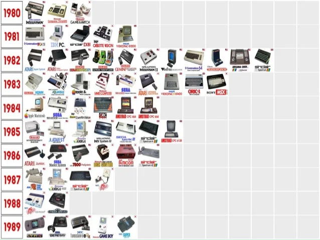
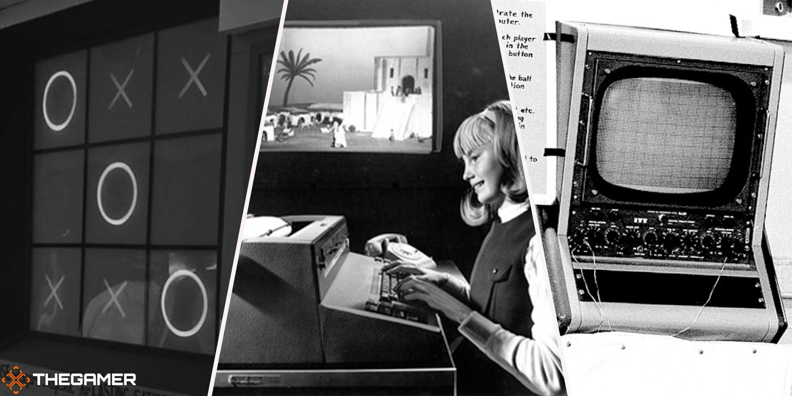

The history of video games spans over several decades and has gone through remarkable transformations
in technology, storytelling, and interactivity.
Brief history on evolution of video games and impact on pop culture
The history of video games has evolved from simple experiments in the 1950s to become a dominant
force in global entertainment. In the 1970s, arcade games like Pong and Space Invaders introduced
video games to the masses, while home consoles like the Atari 2600 and later the Nintendo Entertainment
System in the 1980s revolutionized gaming at home. The 1990s ushered in the 3D graphics era with consoles
like the PlayStation and Nintendo 64, alongside the rise of PC gaming, and games like Final Fantasy VII and
Super Mario 64 set new standards for narrative and gameplay. Online multiplayer games and platforms like World
of Warcraft and Fortnite transformed gaming into a social experience, and indie games flourished with titles like
Minecraft and Undertale. Throughout this evolution, video games have become deeply intertwined with pop culture,
influencing movies, television, fashion, and music, and turning iconic characters like Mario, Link, and Sonic into
global symbols, while fostering global communities and competitive eSports.
